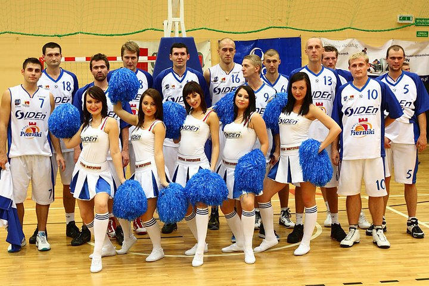
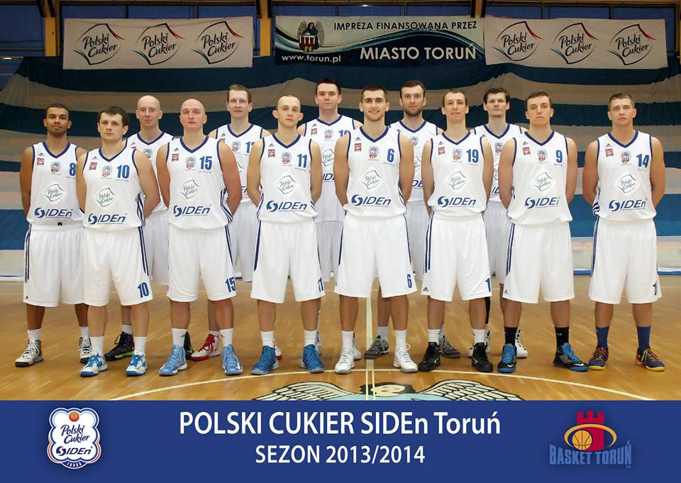
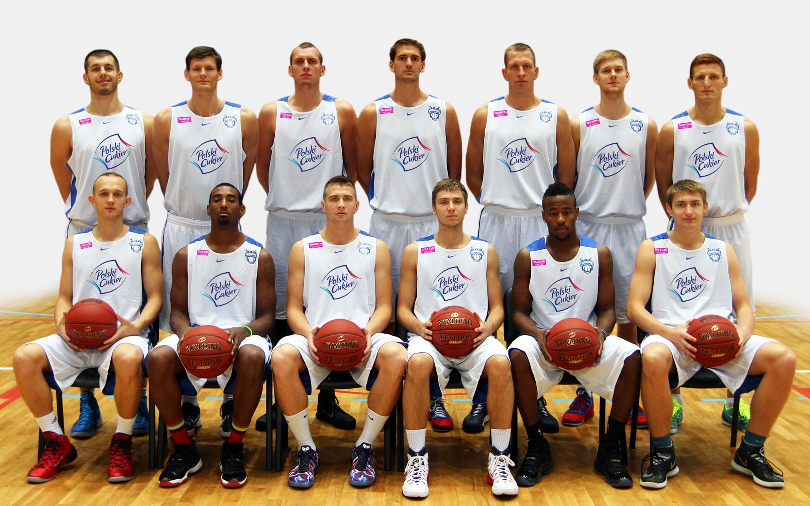
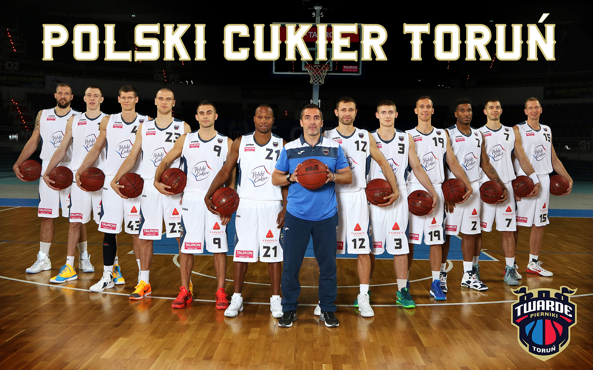
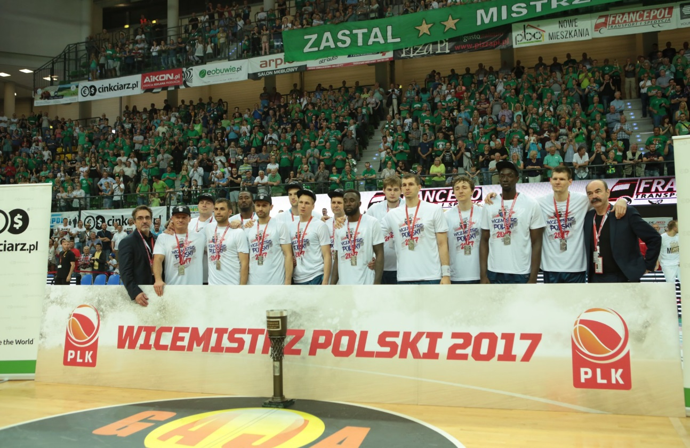
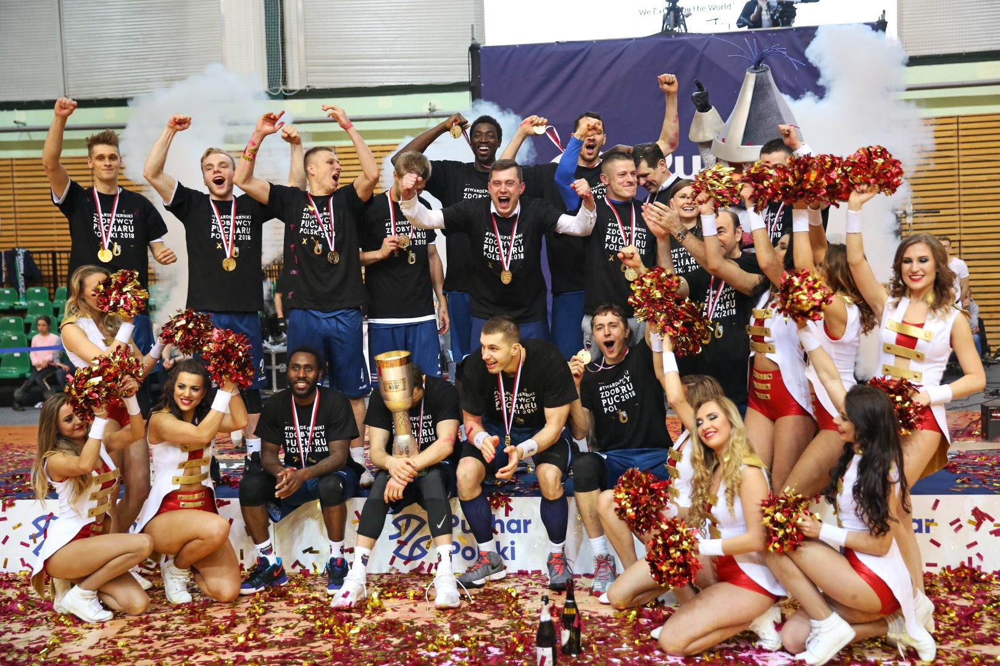
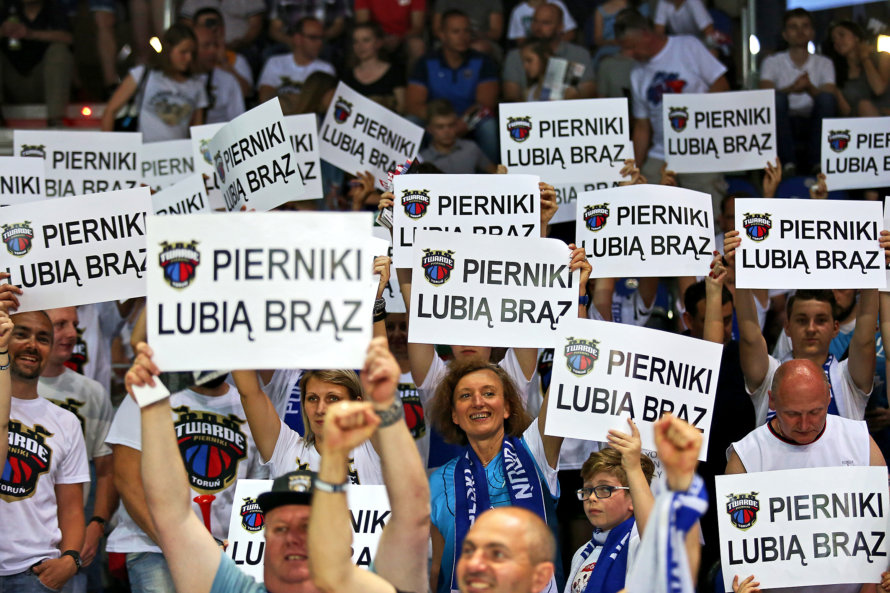
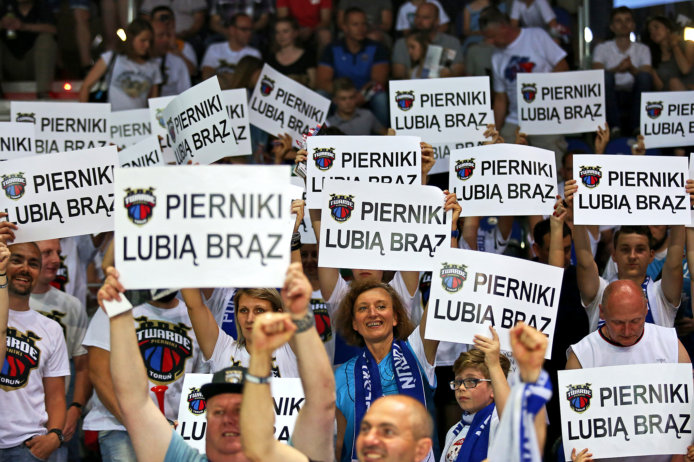
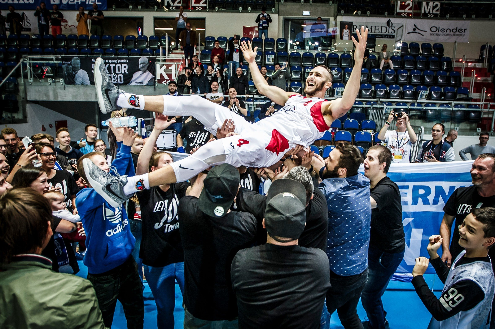
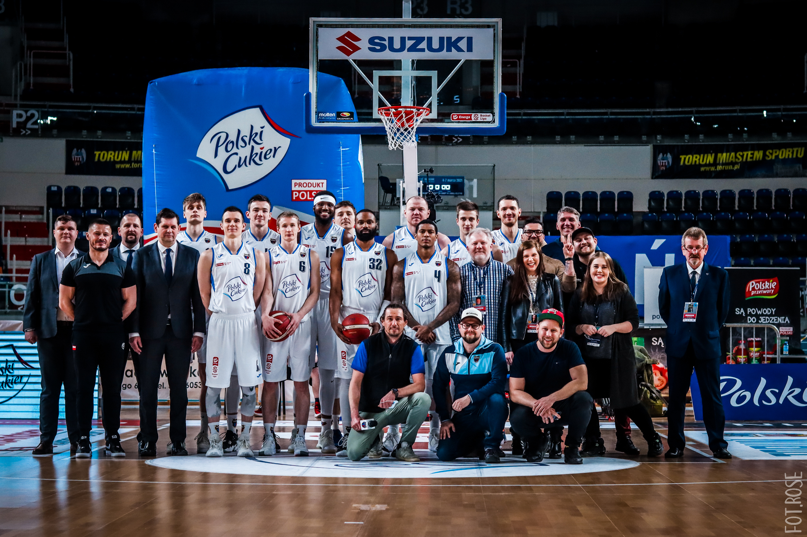

Historia
17 lat historii i tradycji…
Klub sportowy Twarde Pierniki S.A. to organizacja, która jeszcze niedawno funkcjonowała pod nazwą: Stowarzyszenie Miejski Międzyszkolny Klub Sportowy PIERNIKI (MMKS Pierniki Toruń). Po chudych latach dla koszykówki w Toruniu, w październiku 2004 roku drużyna MMKSu VIII LO SIDEn Toruń zadebiutowała w rozgrywkach III ligi. Pierwsza drużyn prowadzona przez trenera Marka Ziółkowskiego oparta została na „srebrnej” drużynie juniorów ZRYWu Elizy Toruń (rok wcześniej zdobyli Wicemistrzostwo Polski U18) oraz doświadczonych zawodnikach w przeszłości związanych z Toruniem. W 2005 roku klub który powstał z inicjatywy grona zapaleńców przeistoczył się w Stowarzyszenie MMKS Pierniki, połączyła ich prawdziwa idea reaktywacji toruńskiej koszykówki w ogólnopolskich rozgrywkach seniorskich, a także zbudowanie pełnej struktury szkolenia dzieci i młodzieży, obejmującej wszystkie kategorie wiekowe.
Per aspera ad astra…
W pierwszych latach działalności klub występował w III lidze. Jednakże dzięki wsparciu finansowym sponsorów (SIDEn Systemy Informatyczne Doradztwo Energetyczne Sp. z o.o.) udało się otrzymać zaproszenie do rozgrywek na wyższym poziomie. Przez kolejne sezony drużyna z Grodu Kopernika z powodzeniem rywalizowała z drużynami z II ligi koszykówki, co dotychczas było szczytem sportowych możliwości klubu. Przełomowym momentem było pozyskanie drugiego strategicznego sponsora – Krajowej Spółki Cukrowej S.A. a także zwiększone wsparcie ze strony miasta Torunia. Nawiązanie współpracy z Polskim Cukrem otworzyło przed klubem całkiem nowe możliwości organizacyjne i sportowe! Po rundzie zasadniczej w sezonie 2010/2011, drużyna seniorów uplasowała się na pierwszym miejscu II ligi grupy A, jednak w finale rundy play off torunianie musieli uznać wyższość drużyny z Kutna, która awansowała do I ligi. Dla drużyny SIDEn-u Polski Cukier (wówczas koszykarze występowali pod taką nazwą) ostatnią szansą na wywalczenie upragnionego awansu był udział w turnieju barażowym w Przemyślu. Rywalami torunian były drużyny z Pleszewa oraz Przemyśla. Nasza ekipa nie pozostawiając żadnych złudzeń rywalom wygrała oba spotkania, dzięki czemu awans na zaplecze ekstraklasy stał się faktem.
Sezon 2010/2011 nie tylko zakończył się tryumfem sportowym, ale także stał się sukcesem organizacyjnym. Mecze koszykarzy cieszyły się ogromnym zainteresowaniem kibiców, którzy wielokrotnie w komplecie wypełniali halę sportową „Spożywczaka”. Nie inaczej było w kolejnych latach. Zmagania drużyny z Grodu Kopernika w I lidze ściągnęły do toruńskiej hali sportowej rzesze nowych fanów. W sezonie 2013/2014 Polski Cukier SIDEn Toruń zbudował bardzo silny zespół którego głównym celem był awans do Tauron Basket Ligi. W trakcie długiego sezonu regularnego zespół Grzegorza Sowińskiego nie miał sobie równych awansując do Play-off z 1 miejsca. W bezpośredniej rywalizacji o awans, główny faworyt nie sprostał jednak presji która po niespodziewanej porażce ze Startem Lublin na własnym parkiecie sparaliżowała drużynę. Organizacyjnie i sportowo klub był jednak gotowy na następny krok…
W sezonie 2014/2015, zgodnie z łacińską sentencją „per aspera ad astra” – przez trudy do gwiazd, klub zagrał w najwyższej klasie rozgrywek koszykarskich w Polsce – Tauron Basket Ligi (Ekstraklasa) w nowoczesnej Hali Sportowo-Widowiskowej „Arena Toruń”, przy drugiej frekwencji w lidze, Polski Cukier Toruń do ostatniej kolejki walczył o awans do rundy Play-off. Był to bardzo dobry debiut Twardych Pierników i wyjątkowy powrót Torunia do koszykarskiej ekstraklasy. Wszyscy w Toruniu liczyli na następny krok w rozwoju i gorąco czekali na następny sezon 2015/2016.
Przed sezonem 2015/2016 pierwszy zespół czekała gruntowna przedbudowa. Trenerem drużyny został jeden z najbardziej utytyułowanych trenerów w historii - Jacek Winnicki. Po wielu udanych latach kariery do rodzinnego miasta powrócił Łukasz Wiśniewski, który w krótkiej historii został kapitanem drużyny. Dodatkowo Polski Cukier Toruń zasili Bartosz Bochno który powrócił do Torunia, czołowy strzelec ligi Michał Michalak, znany z udanych występów Danny Gibson, poteżny środkowy z Czarnogóry Stevan Milosevic, atletyczny i niezwykle efektownie grający skrzydłowy Markeith Cummings oraz reprezentacyjny skrzydłowy Ukrainy - Maksym Korniienko. Tak skompletowana drużyna miała stanąć do walki o historyczny cel, jakim był pierwszy w dziejach klubu awans do rundy Play-Off. Niezwykle udany sezon zakończył ostatni mecz rundy zasadniczej w Radomiu. Polski Cukier Toruń do ostatniej kolejki walczył o drugie miejsce w tabeli. Ostatecznie podopieczni Jacka Winnickiego zakończyli zmagania na czwartym miejscu i przed decydującą rundą trafili na piąty zespól w ligowej tabeli - Czarnych Słupsk. Bardziej ograni w najważniejszych spotkaniach rywale, przełamali atut własnego parkietu i po serii zakończonej 3:1 pokonali Polski Cukier Toruń awansując do Półfinałów Mistrzostw Polski. Twarde Pierniki zakończył więc sezon na miejscu piątym, po którym pozostawał lekki niedosyt delikatnie tylko zaspokojony nagrodami indywidualnymi dla Maksyma Korniienko i Danny'ego Gibsona.
Gramy do końca - tworzymy historię!
W sezonie 2016/2017 prowadzenie drużyny ponownie powierzono Jackowi Winnickiemu. Polski Cukier Toruń przystąpił do budowy nowej drużyny która po poprzednim sezonie potrzebowała zmian. Pomimo odejścia Gibsona, Milosevica, Korniienki, Michalaka, Bochny i Lisewskiego zarządzający budową drużyny Dyrektor Sportowy Ryszard Szczechowiak, znalazł wartościowych następców. Bardzo wartościowym transferem było pozyskanie z Anwilu Włocławek skrzydłowego Bartosza Diduszko. Nowym rozgrywającym został doświadczony amerykanin z węgierskim paszportem Obiadah Obi Trotter, który w przeszłości z sukcesami występował w wielu europejskich ligach. Chorwacki silny skrzydłowy Jure Skifić po sezonach na wschodzie Europy zgodził się na propozycję Polskiego Cukru Toruń i razem z ukraińskim środkowym Maksymem Sandulem, Aleksem Perką i Krzysztofem Sulimą decydował o sile podkoszowej naszej drużyny. Ostatnim zawodnikiem który dołączył do Twardych Pierników został Kyle Weaver, zawodnik z przeszłością w NBA który z miejsca stał się nowym ulubieńcem toruńskiej publiczności. Naładowana pozytywną energią ekipa Jacka Winnickiego zanotowała piorunujący start w sezonie wygrywając pierwsze 13 spotkań! Niesamowita passa Polskiego Cukru zakończyła się dopiero na spotkaniu w Zielonej Górze. Wyróżniającym się graczem w lidze był Weaver, bardzo dobrze funkcjonowała kolektywna obrona dzięki czemu Twarde Pierniki dołączyły do grona faworytów w lidze. Załamanie formy które przytrafiło się naszej drużynie w drugiej połowie sezonu zasadniczego przełamał nieco Cheikh Mbodj który dołączył pod koszami siejąc popłoch wśród rywali. Forma wróciła w idealnym momencie. W pierwszej rundzie Play-Off czwarty zespół po Sezonie Zasadniczym czyli Polski Cukier Toruń zmierzył się z Rosą Radom. Niespodziewanie bezdyskusyjnie 3:0 serię wygrali torunianie! Kluczowe było pierwsze spotkanie w którym podopieczni trenera Jacka Winnickiego wrócili do gry, przegrywając po 28 minutach róznicą 17 punktów. W półfinale Twarde Pierniki również 3:0 uporały się z Energą Czarnymi Słupsk i tym samym awansowały do historycznego finału Polskiej Ligi Koszykówki. Ostateczanie z bilansem 1:4 ulegliśmy Stelmetowi BC Zielona Góra i uzyskaliśmy tytuł Wicemistrza Polski.
CHC3MY W1ĘCEJ - czyli stabilizacja na szczycie!
W sezonie 2017/2018 po sukcesie pod przywództwem Jacka Winnickiego, prowadzenie drużyny, dość niespodziewanie, powierzono młodemu słoweńskiemu trenerowi Dejanowi Mihevcowi. Polski Cukier sezon rozpoczynał od prestiżowego pojedynku w Londynie z Żalgirisem Kowno - legenarnym wielokrotnym mistrzem Litwy, który zaprosił wicemistrzów Polski na spotkanie z rodakami na Wyspach Brytyjskich. Do zespołu oprócz trenera dołączyli nowi zawodnicy. Reprezentanci Polski: Aaron Cel i Karol Gruszecki oraz superstrzelec zza Oceanu Glenn Cosey. Trzon drużyny pozostał jednak bez zmian, co w zamyśle miało dać kontynuuację sukcesów i tak też się stało. Po pierwszej części fazy zasadniczej zakwalifikowaliśnmy się do Pucharu Polski. W ćwierćfinale zmierzyliśmy się z Pszczółką Start Lublin wygrywając 83:71. W półfinale skuteczanie podjeliśmy PGE Turów Zgorzelec i pewnie awansowaliśmy do finału. Historyczny Puchar Polski dla naszego miasta zdobyliśmy pokonując Enea Zastal Zieloną Górę 88:80.
Po sezonie zasaadniczym zajęliśmy w tabeli trzecie miejsce i pewnie zakwalifikowaliśmy się do fazy play-off. Naszym pierwszym rywalem był klub z Dąbrowy Górniczej. Ostatecznie z bilansem 3:0 udało się pokonać MKS i awansować do półfinału, w którym spotkaliśmy się z BM Slam Stal Ostrowem Wielkopolskim. W tej rywalizacji udało się wygrać jedno spotkanie i ulec z bilansem 1:3 drużynie z Wielkopolski. Mecze o brązowy medal rozegraliśmy ze Stelmetem Enea Zieloną Górą. Ostatecznie w rywalizacji mecz i rewanż o naszym zwycięstwie zdecydowała różnica punktów 200 do 181. Tym samym zostaliśmy brązowymi medalistami Mistrzostw Polski 2018. Zakończenie sezonu było wielkim świętem koszykówki w Toruniu. Wyjątkowa oprawa oraz świadomość celu działała wyjątkowo mobilizująco na publiczność i zawodników na naszych na parkiecie.
 

Przed startem sezonu ligowego toruńska drużyna po raz pierwszy wzięła udział w meczach kwalifikacyjnych do Basketball Champions League. Do awansu niezbędne były zwycięstwa w trzech rundach. Najpierw naszym rywalem w dwumeczu była drużyna BC Tsmoki Mińsk. Pierwszy mecz rozegraliśmy w Toruniu uzyskując znaczną przewagę punktową nad Białorusinami (87:61). Z kolei w Mińsku, mimo że dominowały Tsmoki, to przewaga z pierwszego spotkania okazała się kluczowa i ostatecznie dziewięcioma punktami przewagi w dwumeczu zakwalifikowalismy się do kolejnego etapu Ligi Mistrzów. Naszym kolejnym rywalem okazał się hiszpański zespół Estudiantes. Pierwszy mecz Torunianie rozegrali u siebie i niestety ulegli drużynie gości z Madrytu (60:68) tracąc nadzieje na awans do kolejnej rundy. Niemniej jednak wielką niespodzianką okazał się występ Polskiego Cukru Toruń na wyjeździe. Nasza drużyna wygrała w Madrycie z Estudiantes 84:69 i odrobiła straty z pierwszego meczu u siebie. Tym samym awansowaliśmy do trzeciej rundy kwalifikacji Ligi Mistrzów będąc o krok od fazy grupowej. Na ostatniej prostej do BCL spotkaliśmy się z Medi Bayreuth. Pierwsza bitwa odbyła się w Toruniu i zakończyła się remisem 73:73. Decydujące znaczenie miał rewanż w Bawarii. W ostatnim spotkaniu podopieczni Dejana Mihevca przegrali 73:86. O porażce zdecydowała ostatnia, słaba kwarta w wykonaiu Polskiego Cukru Toruń.
Przed startem kolejnego sezonu w Gnieźnie rozegrany został LOTTO Superpuchar Polski o Puchar im. Adama Wójcika. Jako zwycięzcy Pucharu Polski podjęliśmy rywalizację z Mistrzem Polski Anwilem Włocławek. Polski Cukier Toruń dokonał rzeczy niebywałej! Zaledwie 48 godzin po zwycięstwie w meczu kwalifikacyjnym do BCL z Estudiantes w Madrycie, koszykarze z Torunia wzorcowo rozprawili się z Anwilem Włocławek. Po świetnej grze Karola Gruszeckiego, który został MVP Superpucharu, wygraliśmy w derbowym spotkaniu 72:68 i sięgnęliśmy po to trofeum pierwszy raz w historii.
Wielki finał PLAJOFF! 2019 i drugie Wicemistrzostwo dla Polskiego Cukru Toruń
W sezonie 2018/2019 pieczę nad zespołem Polskiego Cukru Toruń sprawował ponownie Dejan Mihevc. Po fazie zasadniczej toruński zespół z drugiego miejsca w tabeli awansował do fazy play-off. W ćwierćfinale Polski Cukier Toruń z bilansem 3:0 pokonał King Szczecin. W półfinale zmierzyliśmy się ze Stelmetem Enea BC Zieloną Górą. Ponownie toruńska drużyna nie pozwoliła sobie na porażkę i pokazała swoją wyższość pokonując rywala w trzech kolejnych spotkaniach. W wielkim finale Polski Cukier Toruń rozegrał siedem meczów derbowych z Anwilem Włocławek. W decydującym spotkaniu finałowym drużyna prowadzona przez Igora Milicica pokonał Polski Cukier Toruń 89:77. Tym samym zespół z grudu Kopernik ponownie został Wicemistrzem Polski.

W sezonie 2019/2020 trenerem Polskiego Cukru Toruń został niemiecki koszykarz polskiego pochodzenia - Sebastian Machowski. Nowy szkoleniowiec prowadził w przeszłości drużyny m.in. z Niemiec, Grecji, Hiszpanii, Włoch, a także polskie zespoły, jak Katowice Kołobrzeg i Turów Zgorzelec. Przed startem sezonu ligowego Polski Cukier Toruń wziął udział w drugiej rundzie kwalifikacyjnej BCL. W związku z sukcesem sportowym z ubiegłego roku toruńska drużyna miała do rozegrania tylko jeden dwumecz. Naszym rywalem był zespół Karhu Basket Kauhajoki z Finlandii. Pierwszy mecz Twarde Pierniki rozegrały na wyjeździe. Gospodarze okazali się silniejsi i z wynikiem 93:82 wygrali z drużyną Polskiego Cukru Toruń. Twarde Pierniki nie poddały się i mimo niekorzystnego bilansu po pierwszym spotkaniu zacięcie walczyli w meczu rewanżowym do ostatniej sekundy i to dosłownie. Polski Cukier Toruń musiał odrobić 11 punktów z meczu w Finlandii. Na dwie sekundy przed końcem prowadził 67:58. Wtedy szalony rzut z dystansu oddał Keith Hornsby, a w zespole Twardych Pierników zapanowała euforia. Drużyna Polskiego Cukru Toruń wygrała z wynikiem 70:58. Keith Hornsby szybko znalazł się na ustach wszystkich kibiców polskiego basketu. Amerykanin, który debiutował na europejskich parkietach, trafił rzut na wagę awansu do fazy grupowej Basketball Champions League.

Tym samy po raz pierwszy w historii drużyna z Torunia awansowała do fazy zasadniczej Basketball Champions League. W fazie grupowej rywalizowaliśmy z tak prestiżowymi drużynami, jak Türk Telekom Ankara (Turcja), Dinamo Sassari (Włochy), czy SIG Strasbourg (Francja). W rozgrywkach Ligi Mistrzów nie udało się awansować do fazy play-off. Zdobyliśby jednak bardzo cenne doświadczenie gry na europejskich parkietach.
Tymczasem w sezonie ligowym pewnie zakwalifikowaliśmy się do ósemki najlepszych drużyn i wzięliśmy udział w Pucharze Polski. Po wygranej w ćwierćfinale z Asseco Arka Gdynia (80:71) i w półfinale z Enea Zastal BC Zieloną Górą (72:69) awansowaliśmy do finału. Ostatecznie po zaciętej rywalizacji niestety ulegliśmy Anwilowi Włocławek (96:103), który został zwycięzcą Suzuki Pucharu Polski 2019. Z kolei sezon ligowy ze względu na pandemię COVID-19 został zakończony po 22. kolejkach fazy zasadniczej. Tym samym Polski Cukier Toruń został sklasyfikowany na 5 miejscu.

Sezon ligowy 2020/2021 kończymy na pierwszym miejscu w województwie kujawsko-pomorskim (10. miejsce w Energa Basket Lidze). Naszej drużynie nie udało się zakwalifikować do fazy play-off.

TWARDE PIERNIKI S.A.
Generała Józefa Bema 73-89
87-100 Toruń
tel. (+48) 690 560 551 [do 15:00]
biuro@twarde.pl
NIP: 956-230-38-45
REGON: 341453737
Sprzedaż biletów i karnetów:
tel. (+48) 690 560 551 [do 15:00]
bilety@twarde.pl
Grupy młodzieżowe:
tel. (+48) 799 111 065
g.sowinski@twarde.pl
Copyright © 2022 Twarde Pierniki
Projekt i wdrożenie: Don